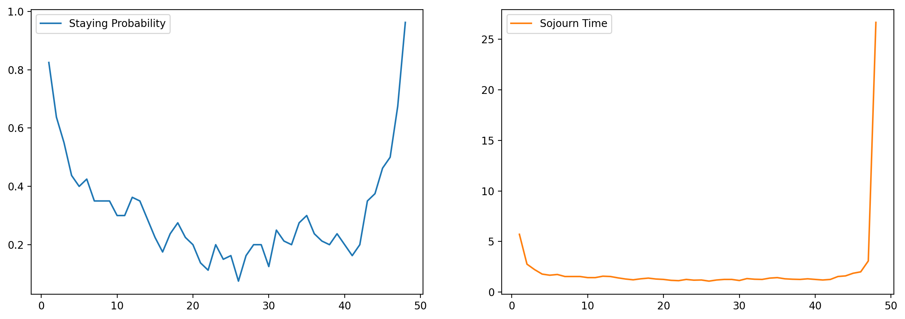
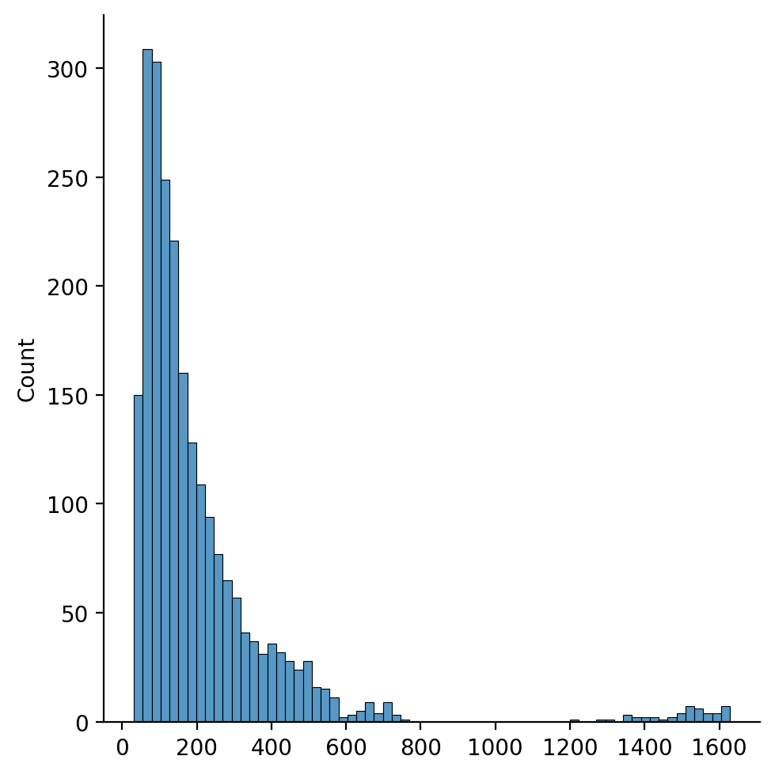
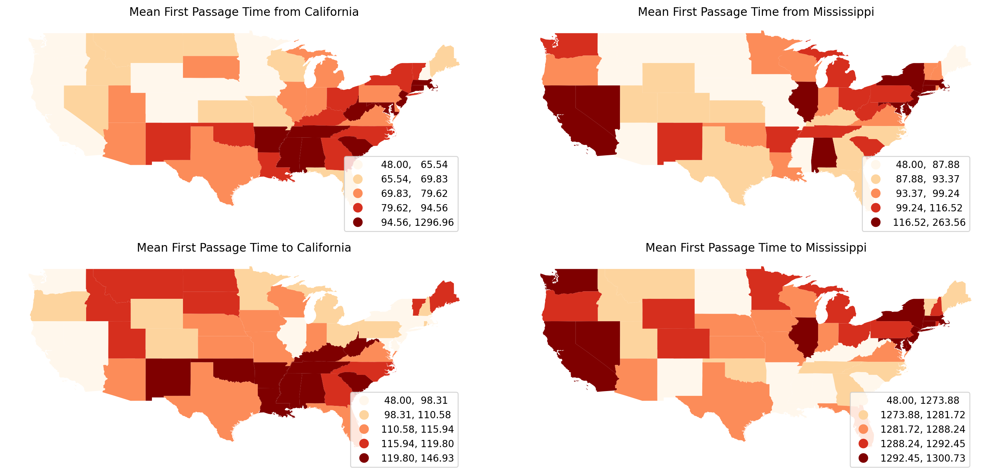
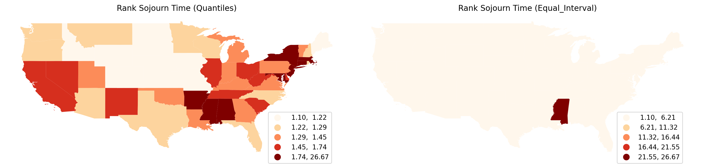

This page was generated from notebooks/RankMarkov.ipynb.
Interactive online version:

Full Rank Markov and Geographic Rank Markov¶
Author: Wei Kang weikang9009@gmail.com
[1]:
import warnings
with warnings.catch_warnings():
warnings.simplefilter("ignore")
# ignore NumbaDeprecationWarning: gh-pysal/libpysal#560
import libpysal as ps
import numpy as np
import matplotlib.pyplot as plt
import seaborn as sns
import pandas as pd
import geopandas as gpd
Full Rank Markov¶
[2]:
with warnings.catch_warnings():
warnings.simplefilter("ignore")
# ignore NumbaDeprecationWarning: gh-pysal/libpysal#560
from giddy.markov import FullRank_Markov
[3]:
income_table = pd.read_csv(ps.examples.get_path("usjoin.csv"))
income_table.head()
[3]:
| Name | STATE_FIPS | 1929 | 1930 | 1931 | 1932 | 1933 | 1934 | 1935 | 1936 | ... | 2000 | 2001 | 2002 | 2003 | 2004 | 2005 | 2006 | 2007 | 2008 | 2009 | |
|---|---|---|---|---|---|---|---|---|---|---|---|---|---|---|---|---|---|---|---|---|---|
| 0 | Alabama | 1 | 323 | 267 | 224 | 162 | 166 | 211 | 217 | 251 | ... | 23471 | 24467 | 25161 | 26065 | 27665 | 29097 | 30634 | 31988 | 32819 | 32274 |
| 1 | Arizona | 4 | 600 | 520 | 429 | 321 | 308 | 362 | 416 | 462 | ... | 25578 | 26232 | 26469 | 27106 | 28753 | 30671 | 32552 | 33470 | 33445 | 32077 |
| 2 | Arkansas | 5 | 310 | 228 | 215 | 157 | 157 | 187 | 207 | 247 | ... | 22257 | 23532 | 23929 | 25074 | 26465 | 27512 | 29041 | 31070 | 31800 | 31493 |
| 3 | California | 6 | 991 | 887 | 749 | 580 | 546 | 603 | 660 | 771 | ... | 32275 | 32750 | 32900 | 33801 | 35663 | 37463 | 40169 | 41943 | 42377 | 40902 |
| 4 | Colorado | 8 | 634 | 578 | 471 | 354 | 353 | 368 | 444 | 542 | ... | 32949 | 34228 | 33963 | 34092 | 35543 | 37388 | 39662 | 41165 | 41719 | 40093 |
5 rows × 83 columns
[4]:
pci = income_table[list(map(str, range(1929, 2010)))].values
pci
[4]:
array([[ 323, 267, 224, ..., 31988, 32819, 32274],
[ 600, 520, 429, ..., 33470, 33445, 32077],
[ 310, 228, 215, ..., 31070, 31800, 31493],
...,
[ 460, 408, 356, ..., 29769, 31265, 31843],
[ 673, 588, 469, ..., 35839, 36594, 35676],
[ 675, 585, 476, ..., 43453, 45177, 42504]])
[5]:
m = FullRank_Markov(pci)
m.ranks
The Markov Chain is irreducible and is composed by:
1 Recurrent class (indices):
[ 0 1 2 3 4 5 6 7 8 9 10 11 12 13 14 15 16 17 18 19 20 21 22 23
24 25 26 27 28 29 30 31 32 33 34 35 36 37 38 39 40 41 42 43 44 45 46 47]
0 Transient classes.
The Markov Chain has 0 absorbing states.
[5]:
array([[45, 45, 44, ..., 41, 40, 39],
[24, 25, 25, ..., 36, 38, 41],
[46, 47, 45, ..., 43, 43, 43],
...,
[34, 34, 34, ..., 47, 46, 42],
[17, 17, 22, ..., 25, 26, 25],
[16, 18, 19, ..., 6, 6, 7]])
[6]:
m.transitions
[6]:
array([[66., 5., 5., ..., 0., 0., 0.],
[ 8., 51., 9., ..., 0., 0., 0.],
[ 2., 13., 44., ..., 0., 0., 0.],
...,
[ 0., 0., 0., ..., 40., 17., 0.],
[ 0., 0., 0., ..., 15., 54., 2.],
[ 0., 0., 0., ..., 2., 1., 77.]])
Full rank Markov transition probability matrix
[7]:
m.p
[7]:
array([[0.825 , 0.0625, 0.0625, ..., 0. , 0. , 0. ],
[0.1 , 0.6375, 0.1125, ..., 0. , 0. , 0. ],
[0.025 , 0.1625, 0.55 , ..., 0. , 0. , 0. ],
...,
[0. , 0. , 0. , ..., 0.5 , 0.2125, 0. ],
[0. , 0. , 0. , ..., 0.1875, 0.675 , 0.025 ],
[0. , 0. , 0. , ..., 0.025 , 0.0125, 0.9625]])
Full rank mean first passage times
[8]:
m.mfpt
[8]:
array([[ 48. , 87.96280048, 68.1089084 , ..., 443.76689275,
518.31000749, 1628.59025557],
[ 225.92564594, 48. , 78.75804364, ..., 440.0173313 ,
514.56045127, 1624.84070661],
[ 271.55443692, 102.484092 , 48. , ..., 438.93288204,
513.47599512, 1623.75624059],
...,
[ 727.11189921, 570.15910508, 546.61934646, ..., 48. ,
117.41906375, 1278.96860316],
[ 730.40467469, 573.45179415, 549.91216045, ..., 49.70722573,
48. , 1202.06279368],
[ 754.8761577 , 597.92333477, 574.38361779, ..., 43.23574191,
104.9460425 , 48. ]])
[9]:
m.sojourn_time
[9]:
array([ 5.71428571, 2.75862069, 2.22222222, 1.77777778, 1.66666667,
1.73913043, 1.53846154, 1.53846154, 1.53846154, 1.42857143,
1.42857143, 1.56862745, 1.53846154, 1.40350877, 1.29032258,
1.21212121, 1.31147541, 1.37931034, 1.29032258, 1.25 ,
1.15942029, 1.12676056, 1.25 , 1.17647059, 1.19402985,
1.08108108, 1.19402985, 1.25 , 1.25 , 1.14285714,
1.33333333, 1.26984127, 1.25 , 1.37931034, 1.42857143,
1.31147541, 1.26984127, 1.25 , 1.31147541, 1.25 ,
1.19402985, 1.25 , 1.53846154, 1.6 , 1.86046512,
2. , 3.07692308, 26.66666667])
[10]:
df_fullrank = pd.DataFrame(
np.c_[m.p.diagonal(), m.sojourn_time],
columns=["Staying Probability", "Sojourn Time"],
index=np.arange(m.p.shape[0]) + 1,
)
df_fullrank.head()
[10]:
| Staying Probability | Sojourn Time | |
|---|---|---|
| 1 | 0.8250 | 5.714286 |
| 2 | 0.6375 | 2.758621 |
| 3 | 0.5500 | 2.222222 |
| 4 | 0.4375 | 1.777778 |
| 5 | 0.4000 | 1.666667 |
[11]:
df_fullrank.plot(subplots=True, layout=(1, 2), figsize=(15, 5))
[11]:
array([[<Axes: >, <Axes: >]], dtype=object)

[12]:
with warnings.catch_warnings():
warnings.simplefilter("ignore")
# ignore -- seaborn/_oldcore.py:1498: FutureWarning: is_categorical_dtype is deprecated
# and will be removed in a future version. Use isinstance(dtype, CategoricalDtype) instead
# ignore -- seaborn/_oldcore.py:1119: FutureWarning: use_inf_as_na option is deprecated
# and will be removed in a future version. Convert inf values to NaN before operating instead.
sns.displot(m.mfpt.flatten(), kde=False)

Geographic Rank Markov¶
[13]:
from giddy.markov import GeoRank_Markov, Markov, sojourn_time
gm = GeoRank_Markov(pci)
The Markov Chain is irreducible and is composed by:
1 Recurrent class (indices):
[ 0 1 2 3 4 5 6 7 8 9 10 11 12 13 14 15 16 17 18 19 20 21 22 23
24 25 26 27 28 29 30 31 32 33 34 35 36 37 38 39 40 41 42 43 44 45 46 47]
0 Transient classes.
The Markov Chain has 0 absorbing states.
[14]:
gm.transitions
[14]:
array([[38., 0., 8., ..., 0., 0., 0.],
[ 0., 15., 0., ..., 0., 1., 0.],
[ 6., 0., 44., ..., 5., 0., 0.],
...,
[ 2., 0., 5., ..., 34., 0., 0.],
[ 0., 0., 0., ..., 0., 18., 2.],
[ 0., 0., 0., ..., 0., 3., 14.]])
[15]:
gm.p
[15]:
array([[0.475 , 0. , 0.1 , ..., 0. , 0. , 0. ],
[0. , 0.1875, 0. , ..., 0. , 0.0125, 0. ],
[0.075 , 0. , 0.55 , ..., 0.0625, 0. , 0. ],
...,
[0.025 , 0. , 0.0625, ..., 0.425 , 0. , 0. ],
[0. , 0. , 0. , ..., 0. , 0.225 , 0.025 ],
[0. , 0. , 0. , ..., 0. , 0.0375, 0.175 ]])
[16]:
gm.sojourn_time[:10]
[16]:
array([1.9047619 , 1.23076923, 2.22222222, 1.73913043, 1.15942029,
3.80952381, 1.70212766, 1.25 , 1.31147541, 1.11111111])
[17]:
gm.sojourn_time
[17]:
array([ 1.9047619 , 1.23076923, 2.22222222, 1.73913043, 1.15942029,
3.80952381, 1.70212766, 1.25 , 1.31147541, 1.11111111,
1.73913043, 1.37931034, 1.17647059, 1.21212121, 1.33333333,
1.37931034, 1.09589041, 2.10526316, 2. , 1.45454545,
1.26984127, 26.66666667, 1.19402985, 1.23076923, 1.09589041,
1.56862745, 1.26984127, 2.42424242, 1.50943396, 2. ,
1.29032258, 1.09589041, 1.6 , 1.42857143, 1.25 ,
1.45454545, 1.29032258, 1.6 , 1.17647059, 1.56862745,
1.25 , 1.37931034, 1.45454545, 1.42857143, 1.29032258,
1.73913043, 1.29032258, 1.21212121])
[18]:
gm.mfpt
[18]:
array([[ 48. , 63.35532038, 92.75274652, ..., 82.47515731,
71.01114491, 68.65737127],
[108.25928005, 48. , 127.99032986, ..., 92.03098299,
63.36652935, 61.82733039],
[ 76.96801786, 64.7713783 , 48. , ..., 73.84595169,
72.24682723, 69.77497173],
...,
[ 93.3107474 , 62.47670463, 105.80634118, ..., 48. ,
69.30121319, 67.08838421],
[113.65278078, 61.1987031 , 133.57991745, ..., 96.0103924 ,
48. , 56.74165107],
[114.71894813, 63.4019776 , 134.73381719, ..., 97.287895 ,
61.45565054, 48. ]])
[19]:
income_table["geo_sojourn_time"] = gm.sojourn_time
i = 0
for state in income_table["Name"]:
income_table[f"geo_mfpt_to_{state}"] = gm.mfpt[:, i]
income_table[f"geo_mfpt_from_{state}"] = gm.mfpt[i, :]
i = i + 1
income_table.head()
[19]:
| Name | STATE_FIPS | 1929 | 1930 | 1931 | 1932 | 1933 | 1934 | 1935 | 1936 | ... | geo_mfpt_to_Virginia | geo_mfpt_from_Virginia | geo_mfpt_to_Washington | geo_mfpt_from_Washington | geo_mfpt_to_West Virginia | geo_mfpt_from_West Virginia | geo_mfpt_to_Wisconsin | geo_mfpt_from_Wisconsin | geo_mfpt_to_Wyoming | geo_mfpt_from_Wyoming | |
|---|---|---|---|---|---|---|---|---|---|---|---|---|---|---|---|---|---|---|---|---|---|
| 0 | Alabama | 1 | 323 | 267 | 224 | 162 | 166 | 211 | 217 | 251 | ... | 72.186055 | 109.828532 | 82.994754 | 118.769984 | 82.475157 | 93.310747 | 71.011145 | 113.652781 | 68.657371 | 114.718948 |
| 1 | Arizona | 4 | 600 | 520 | 429 | 321 | 308 | 362 | 416 | 462 | ... | 67.544447 | 60.838807 | 76.090895 | 66.729262 | 92.030983 | 62.476705 | 63.366529 | 61.198703 | 61.827330 | 63.401978 |
| 2 | Arkansas | 5 | 310 | 228 | 215 | 157 | 157 | 187 | 207 | 247 | ... | 73.650943 | 129.533691 | 84.071211 | 138.692513 | 73.845952 | 105.806341 | 72.246827 | 133.579917 | 69.774972 | 134.733817 |
| 3 | California | 6 | 991 | 887 | 749 | 580 | 546 | 603 | 660 | 771 | ... | 71.377700 | 111.644884 | 62.230417 | 97.908341 | 104.922271 | 121.670243 | 69.368408 | 110.668388 | 59.998457 | 105.965215 |
| 4 | Colorado | 8 | 634 | 578 | 471 | 354 | 353 | 368 | 444 | 542 | ... | 69.627179 | 57.106339 | 66.353930 | 52.229230 | 98.797636 | 66.464398 | 60.762589 | 52.324565 | 55.559020 | 53.872702 |
5 rows × 180 columns
[20]:
geo_table = gpd.read_file(ps.examples.get_path("us48.shp"))
complete_table = geo_table.merge(income_table, left_on="STATE_NAME", right_on="Name")
complete_table.head()
[20]:
| AREA | PERIMETER | STATE_ | STATE_ID | STATE_NAME | STATE_FIPS_x | SUB_REGION | STATE_ABBR | geometry | Name | ... | geo_mfpt_to_Virginia | geo_mfpt_from_Virginia | geo_mfpt_to_Washington | geo_mfpt_from_Washington | geo_mfpt_to_West Virginia | geo_mfpt_from_West Virginia | geo_mfpt_to_Wisconsin | geo_mfpt_from_Wisconsin | geo_mfpt_to_Wyoming | geo_mfpt_from_Wyoming | |
|---|---|---|---|---|---|---|---|---|---|---|---|---|---|---|---|---|---|---|---|---|---|
| 0 | 20.750 | 34.956 | 1 | 1 | Washington | 53 | Pacific | WA | MULTIPOLYGON (((-122.40075 48.22540, -122.4615... | Washington | ... | 71.663055 | 73.756804 | 48.000000 | 48.000000 | 101.592400 | 81.692586 | 65.219124 | 70.701226 | 53.126177 | 64.476985 |
| 1 | 45.132 | 34.527 | 2 | 2 | Montana | 30 | Mtn | MT | POLYGON ((-111.47463 44.70224, -111.48001 44.6... | Montana | ... | 69.918931 | 59.067897 | 76.184088 | 64.710823 | 90.781850 | 58.795201 | 63.455248 | 58.975522 | 60.881954 | 60.553000 |
| 2 | 9.571 | 18.899 | 3 | 3 | Maine | 23 | N Eng | ME | MULTIPOLYGON (((-69.77779 44.07407, -69.86044 ... | Maine | ... | 69.431862 | 53.872836 | 77.512381 | 62.862378 | 87.734760 | 54.244823 | 66.257807 | 56.905741 | 61.978506 | 58.336426 |
| 3 | 21.874 | 21.353 | 4 | 4 | North Dakota | 38 | W N Cen | ND | POLYGON ((-98.73006 45.93830, -99.00645 45.939... | North Dakota | ... | 69.441690 | 56.526347 | 76.659646 | 62.823668 | 85.031218 | 49.511240 | 67.362718 | 58.717458 | 64.386382 | 59.728719 |
| 4 | 22.598 | 22.746 | 5 | 5 | South Dakota | 46 | W N Cen | SD | POLYGON ((-102.78793 42.99532, -103.00541 42.9... | South Dakota | ... | 68.229894 | 61.548209 | 78.886304 | 68.794083 | 88.192659 | 55.754109 | 66.187694 | 63.802359 | 64.336311 | 65.070022 |
5 rows × 189 columns
[21]:
complete_table.columns
[21]:
Index(['AREA', 'PERIMETER', 'STATE_', 'STATE_ID', 'STATE_NAME', 'STATE_FIPS_x',
'SUB_REGION', 'STATE_ABBR', 'geometry', 'Name',
...
'geo_mfpt_to_Virginia', 'geo_mfpt_from_Virginia',
'geo_mfpt_to_Washington', 'geo_mfpt_from_Washington',
'geo_mfpt_to_West Virginia', 'geo_mfpt_from_West Virginia',
'geo_mfpt_to_Wisconsin', 'geo_mfpt_from_Wisconsin',
'geo_mfpt_to_Wyoming', 'geo_mfpt_from_Wyoming'],
dtype='object', length=189)
Visualizing mean first passage time from/to California/Mississippi:
[22]:
with warnings.catch_warnings():
warnings.simplefilter("ignore")
# ignore geopandas/plotting.py:732:
# FutureWarning: is_categorical_dtype is deprecated and will be removed in a future version.
fig, axes = plt.subplots(nrows=2, ncols=2, figsize=(15, 7))
target_states = ["California", "Mississippi"]
directions = ["from", "to"]
plt_kws = dict(cmap="OrRd", scheme="quantiles", legend=True)
for i, direction in enumerate(directions):
for j, target in enumerate(target_states):
ax = axes[i, j]
col = f"{direction}_{target}"
complete_table.plot(ax=ax, column=f"geo_mfpt_{col}", **plt_kws)
ax.set_title(f"Mean First Passage Time {direction} {target}")
ax.axis("off")
leg = ax.get_legend()
leg.set_bbox_to_anchor((0.8, 0.15, 0.16, 0.2))
plt.tight_layout()

Visualizing sojourn time for each US state:
[23]:
with warnings.catch_warnings():
warnings.simplefilter("ignore")
# ignore geopandas/plotting.py:732:
# FutureWarning: is_categorical_dtype is deprecated and will be removed in a future version.
fig, axes = plt.subplots(nrows=1, ncols=2, figsize=(15, 7))
schemes = ["Quantiles", "Equal_Interval"]
plt_kws = dict(cmap="OrRd", legend=True, column="geo_sojourn_time")
for i, scheme in enumerate(schemes):
ax = axes[i]
complete_table.plot(ax=ax, scheme=scheme, **plt_kws)
ax.set_title(f"Rank Sojourn Time ({scheme})")
ax.axis("off")
leg = ax.get_legend()
leg.set_bbox_to_anchor((0.8, 0.15, 0.16, 0.2))
plt.tight_layout()
